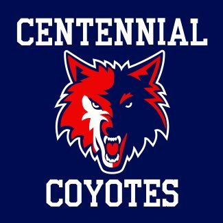
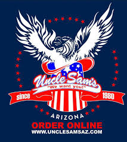
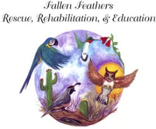

Education

Centennial High School - Class of 2020
I am currently a Junior at Centennial High School in the graduating class of 2020. I have taken multiple computer and technology classes as well as taken all dual enrollment opportunites to gain college credits. I maintain my grades, keep up on assignments, turn in all my work, and I usually do pretty good on tests. Overall, I love my school and enjoy being a student there.
Experience
Completed Coursework
- Computer Programming and Tech
- Game Design and Development
- AP Computer Science A
Coursework In Progress
- Advanced Software Development H
- Survey of Coding
- Coding Fundamentals I
Coding Experience
Java
JavaScript
HTML
C#
CSS
Programs Used
Employment

Uncle Sam's - 7/2018-11/2018
For my first job I became a busser for a resturaunt called Uncle Sam's. I found this job from a friend who also worked there at the time. While working at Uncle Sam's I definitly picked up some work skills from having to move fast and work hard. I bussed tables around the resturaunt, which thankfully wasn't too big, then took the dishes back to the dishwasher, and then put the clean dishes back where they belong. I also had to take out the trash, make sure there was enough ice in all the ice bins, and clean the beer glasses, which could get to be quite a bit on Fridays and Saturdays.
Volunteer Service

Fallen Feathers
To get my volunteer hours done at West-MEC, I volunteered at a bird rescue place called Fallen Feathers, where they have hundreds of birds that they take care of everyday. People are able to bring their birds there if they are injured of if something is wrong with them. Fallen Feathers is an open volunteer place and welcome people to help anytime. When I volunteered there I did various different things like feed the birds, clean their cages, and sweep around the place. I also washed the food and water dishes and sometimes moved things like bigger cages to places that they wanted.